Engineering plastics↗
Engineering plastics↗Engineering plastics
PA (Nylon PA6 / PA66)
A nylon direction for gears, bearings and structural parts. Consider temperature, moisture condition, impact and dimensional requirements.

TECHINHERIT / MATERIALS
ENGINEERED MATERIALS
A MATERIAL FOR YOUR APPLICATION
Browse by category, base resin or keyword. Compare materials to clarify the performance directions that matter to your project.
Engineering plastics↗A nylon direction for gears, bearings and structural parts. Consider temperature, moisture condition, impact and dimensional requirements.
 Engineering plastics↗
Engineering plastics↗An engineering-plastic direction combining optical appearance and impact requirements for housings, transparent parts and assemblies.
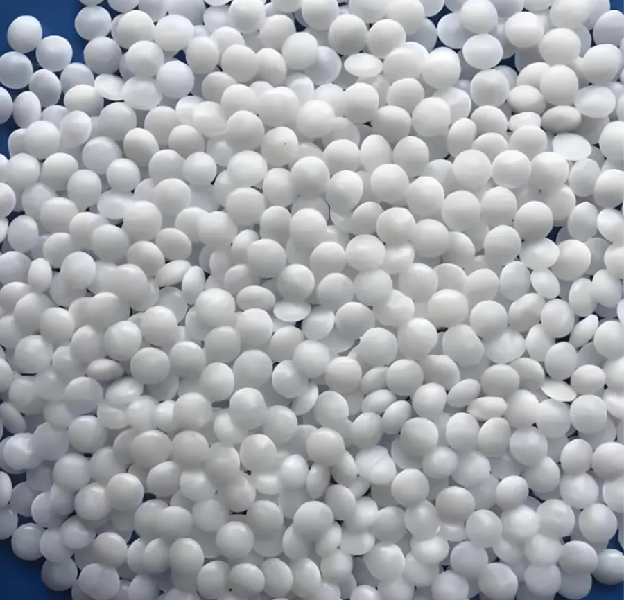
Engineering plastics↗A material direction for precision transmission and mating parts. Consider friction, loads, tolerances and the long-term operating environment.
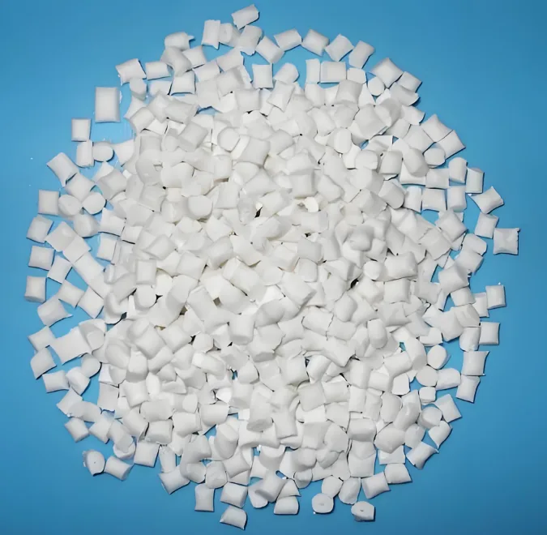
Engineering plastics↗An engineering-plastic direction for electrical and structural parts, with reinforcement, flame-retardant and assembly requirements considered as needed.
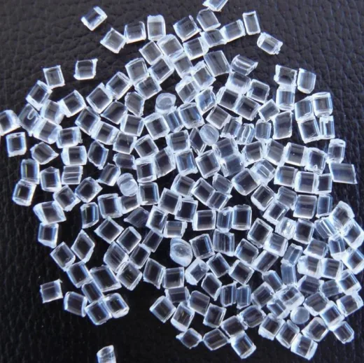
Engineering plastics↗A material direction for optical, display and appearance needs, considered alongside environment, surface requirements and geometry.
 Engineering plastics↗
Engineering plastics↗A resin direction balancing appearance, impact and processing needs for housings, consumer products and structural design.
 Engineering plastics↗
Engineering plastics↗A polypropylene direction for general applications, with modified or dedicated compounds discussed around operating conditions and performance targets.
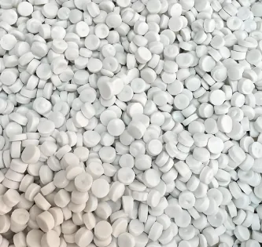
Engineering plastics↗High-density and low-density polyethylene directions. Consider stiffness, flexibility, contact media and processing when selecting a resin system.
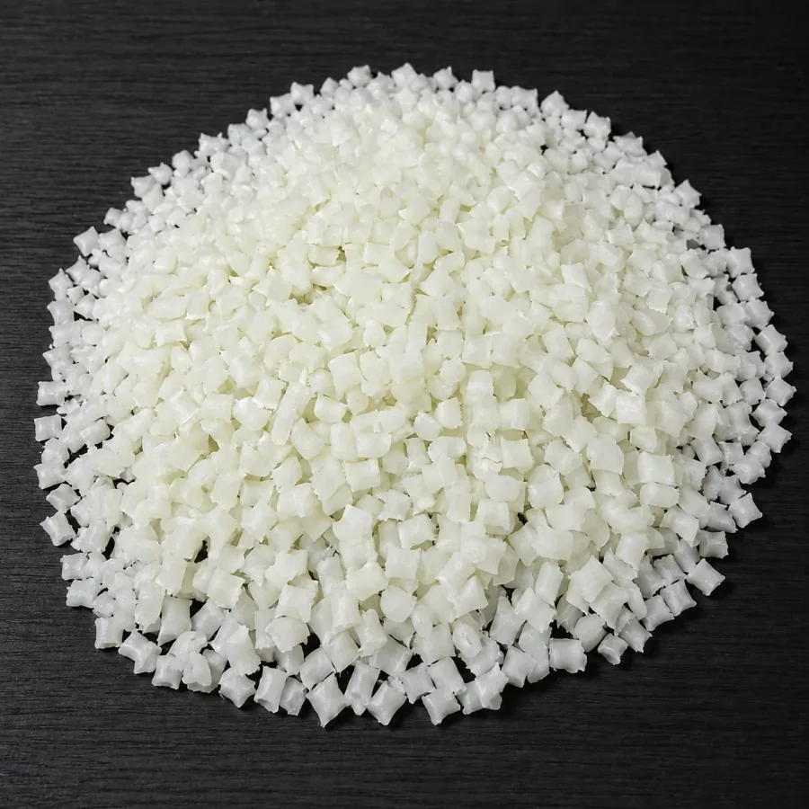
Glass-fiber reinforced↗PA66 with 30% glass fiber, for discussions involving structural loads, stiffness and dimensional stability.
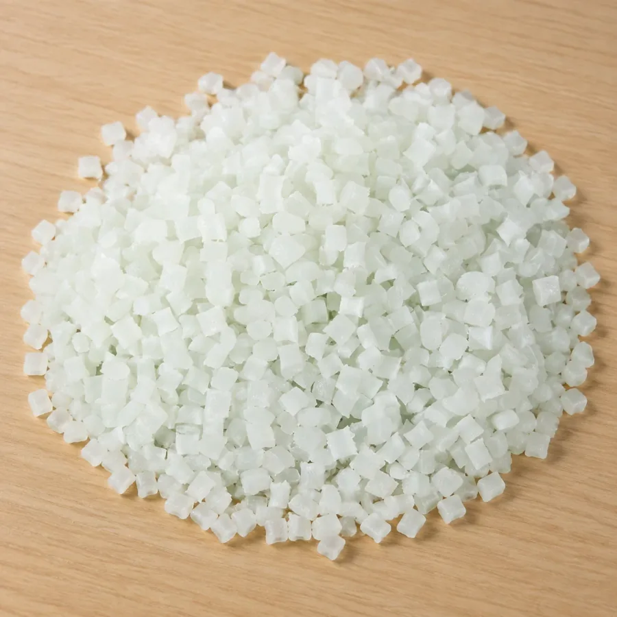
Glass-fiber reinforced↗PA6 with 30% glass fiber. Evaluate it alongside part design, molding conditions and the operating environment.
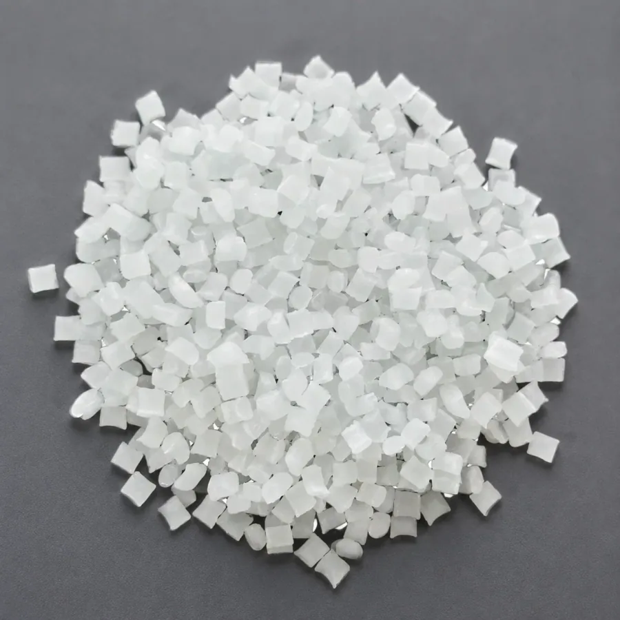
Glass-fiber reinforced↗PA66 with 20% glass fiber, balancing reinforcement, flow and part-design requirements.
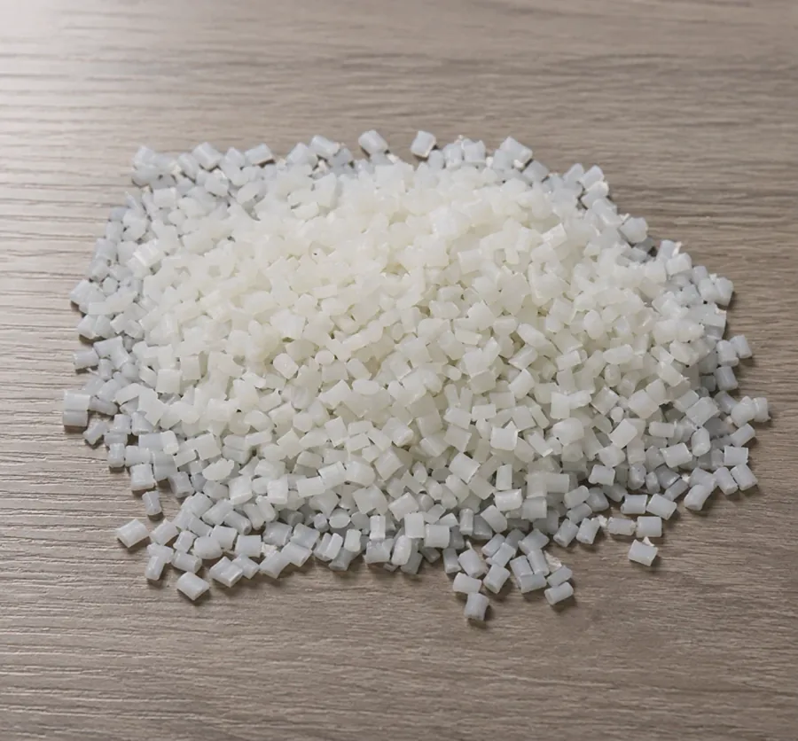
Glass-fiber reinforced↗PA6 with 15% glass fiber, selected around mechanical requirements and molding conditions.
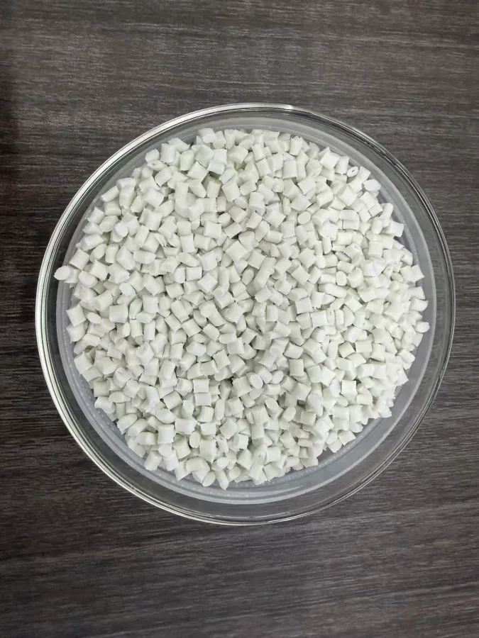
Functional compounds↗A PA6 direction combining flame-retardant technology with glass-fiber reinforcement. Any flame rating must be tied to a specific grade, sample thickness and test method.
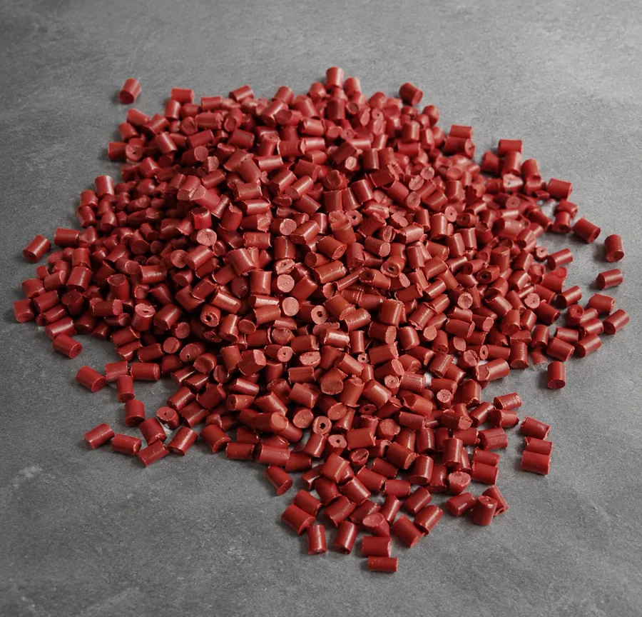
Functional compounds↗A PA6 direction using red-phosphorus flame-retardant technology. Define flame, electrical, color and environmental requirements together.
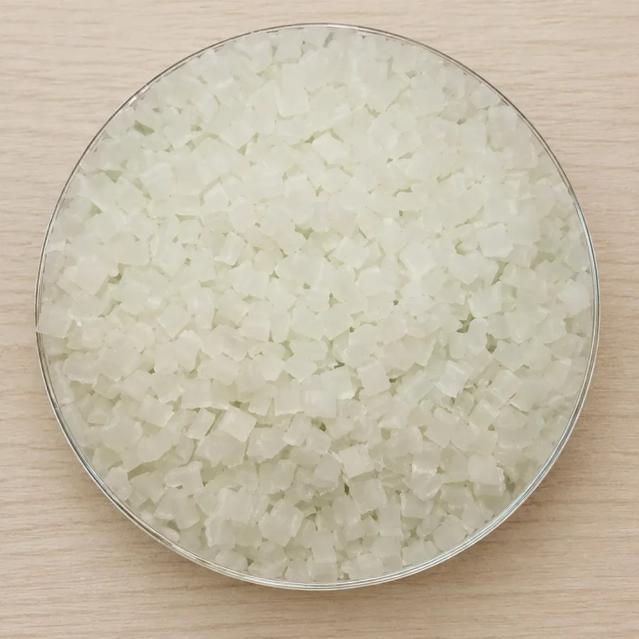
Functional compounds↗A modified PA6 direction for elevated-temperature use. Distinguish short-term exposure, continuous service temperature and actual loading.
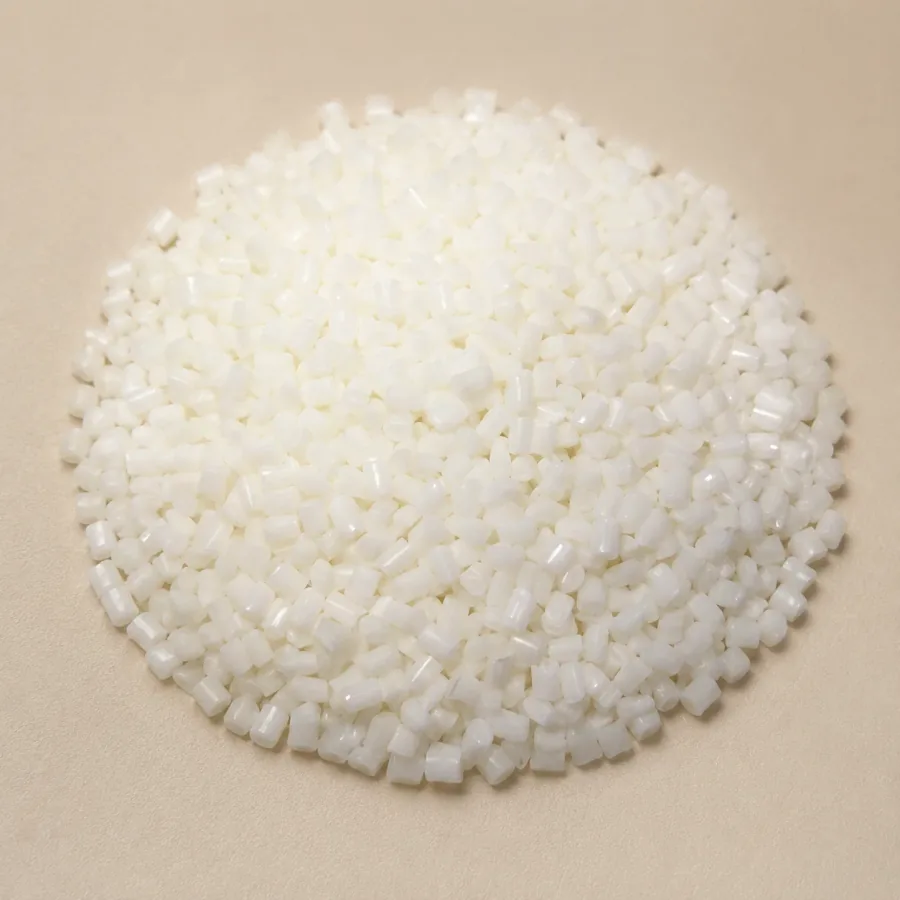
Functional compounds↗A toughened PA66 direction for low-temperature and impact requirements, evaluated against the minimum service temperature and impact conditions.
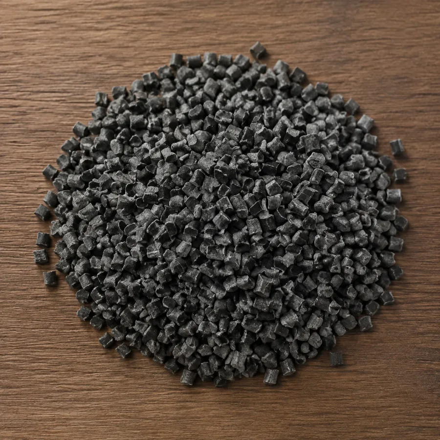
Functional compounds↗A PA6 direction addressing flame retardancy, reinforcement and low-temperature toughness, requiring coordinated validation of the target properties.
 Conductive & antistatic↗
Conductive & antistatic↗A ABS-based antistatic material direction. Define surface or volume resistance targets, test conditions, mechanical needs and appearance requirements as the starting point for selection.
Conductive & antistatic↗A PP-based conductive material direction. Define surface or volume resistance targets, test conditions, mechanical needs and appearance requirements as the starting point for selection.
Conductive & antistatic↗A PC-based conductive material direction. Define surface or volume resistance targets, test conditions, mechanical needs and appearance requirements as the starting point for selection.
 Conductive & antistatic↗
Conductive & antistatic↗A PA66-based antistatic material direction. Define surface or volume resistance targets, test conditions, mechanical needs and appearance requirements as the starting point for selection.
 Conductive & antistatic↗
Conductive & antistatic↗A PA6-based antistatic material direction. Define surface or volume resistance targets, test conditions, mechanical needs and appearance requirements as the starting point for selection.
Conductive & antistatic↗A PA-based conductive material direction. Define surface or volume resistance targets, test conditions, mechanical needs and appearance requirements as the starting point for selection.
Conductive & antistatic↗A ABS-based conductive material direction. Define surface or volume resistance targets, test conditions, mechanical needs and appearance requirements as the starting point for selection.
 Carbon-fiber composites↗
Carbon-fiber composites↗A carbon-fiber composite direction based on PPS. Consider fiber distribution, structural design and processing to assess lightweight and stiffness requirements together.
 Carbon-fiber composites↗
Carbon-fiber composites↗A carbon-fiber composite direction based on PC. Consider fiber distribution, structural design and processing to assess lightweight and stiffness requirements together.
 Carbon-fiber composites↗
Carbon-fiber composites↗A carbon-fiber composite direction based on ETFE. Consider fiber distribution, structural design and processing to assess lightweight and stiffness requirements together.
 Carbon-fiber composites↗
Carbon-fiber composites↗A carbon-fiber composite direction based on PA6. Consider fiber distribution, structural design and processing to assess lightweight and stiffness requirements together.
 Carbon-fiber composites↗
Carbon-fiber composites↗A carbon-fiber composite direction based on PA66. Consider fiber distribution, structural design and processing to assess lightweight and stiffness requirements together.
 Carbon-fiber composites↗
Carbon-fiber composites↗A carbon-fiber composite direction based on PA12. Consider fiber distribution, structural design and processing to assess lightweight and stiffness requirements together.
 Carbon-fiber composites↗
Carbon-fiber composites↗A carbon-fiber composite direction based on PEEK. Consider fiber distribution, structural design and processing to assess lightweight and stiffness requirements together.
 Carbon-fiber composites↗
Carbon-fiber composites↗A carbon-fiber composite direction based on PVDF. Consider fiber distribution, structural design and processing to assess lightweight and stiffness requirements together.
 Carbon-fiber composites↗
Carbon-fiber composites↗A carbon-fiber composite direction based on PEI. Consider fiber distribution, structural design and processing to assess lightweight and stiffness requirements together.
 Carbon-fiber composites↗
Carbon-fiber composites↗A carbon-fiber composite direction based on PFA. Consider fiber distribution, structural design and processing to assess lightweight and stiffness requirements together.
 Carbon-fiber composites↗
Carbon-fiber composites↗A carbon-fiber composite direction based on Thermoplastic resin. Consider fiber distribution, structural design and processing to assess lightweight and stiffness requirements together.
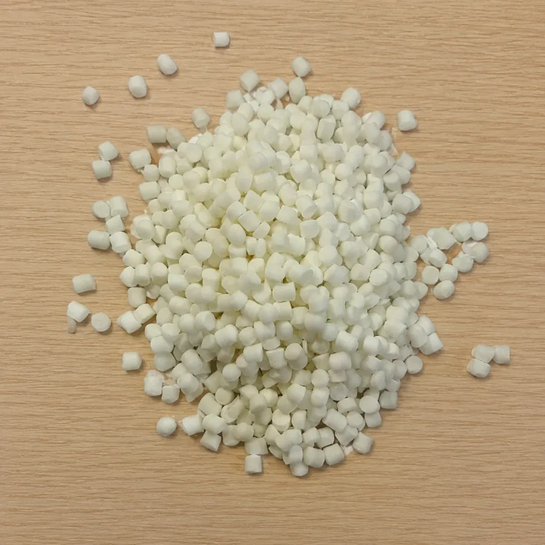
Thermoplastic elastomers↗A thermoplastic elastomer direction for flexibility, wear and overmolding. Define hardness, contact media and the operating environment.
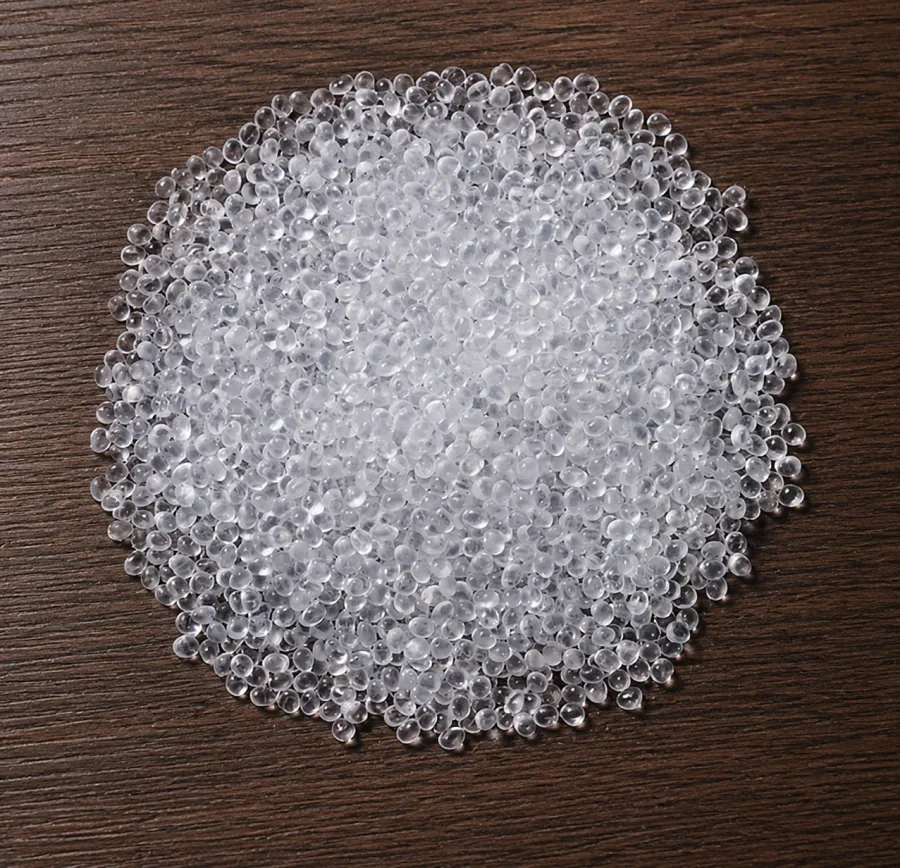
Thermoplastic elastomers↗A material direction for elasticity and soft touch. Discuss overmolding substrates, hardness and processing requirements when selecting a grade.
This catalog introduces material systems and functional directions. Confirm specific grades, performance data, colors and supply arrangements with our materials team.
MATERIALS / ENGINEERING / POSSIBILITIES